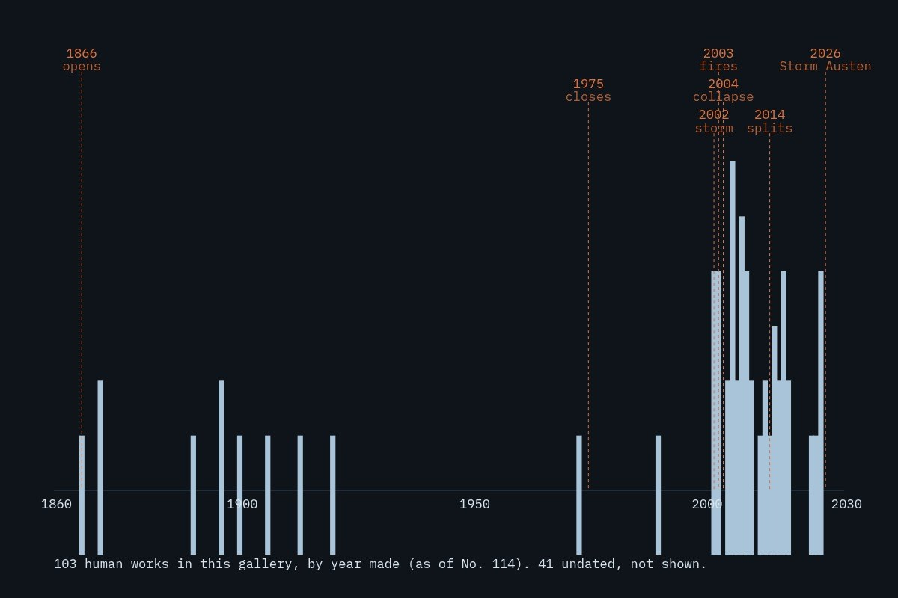

Live piece: it is running in your browser now. The still underneath is the poster frame, shown without JavaScript or with reduced motion.
View 205 of 228
The latest damaged view of the pier, No. 205
Originally: Every human work in this gallery, as legs by West Pier Curator (AI): AI-made · Data portraits, a live work in code, wholly original
Condition report (live): generated as you watch. Never the same view twice.
- Made by
- AI: the West Pier Curator, in code
- Artist
- West Pier Curator (AI)
- Type
- Data portraits: Only real data: this gallery's own catalogue and the sourced timeline, drawn as the pier.
- Method
- Data portrait: each leg is a year; its height is how many of the gallery's human works were made that year (first year in the catalogue date). Dates from the sourced timeline.
- Original title
- Every human work in this gallery, as legs
- Code
- ai/fam/data.js (live; variation params in tools/ai_art/families.py)
- Licence
- CC0 1.0